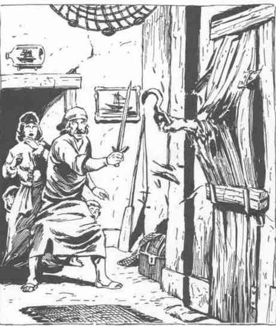

海尸（溺亡者） · Sea Zombie (Drowned Ones)
海尸 Sea Zombie（“溺亡者”）
 |
|
溺亡者（也称海尸）是死于海上的人类尸体所变成的活尸。虽然它们类似陆地上的僵尸，但它们拥有自由意志；据说它们是由收割者之神奈落的意志赋予行动的。
外貌：溺亡者的外貌与它们的名字相符：它们看起来像已经在水下待了一段时间的人类尸体——身体肿胀，变色的肉体滴着污水，眼窝空洞，舌头经常从发黑的嘴唇之间伸出。它们的面容和腐烂恶臭令人厌恶，因此任何看见溺亡者，或进入其 20 英尺范围内的人，都必须进行对抗毒素的豁免检定。豁免失败表示角色会感到恶心，并在 2–8 个回合内以 –1 进行攻击和防御。在陆地上，溺亡者行动缓慢，步态笨拙而蹒跚。然而在水中，它们却能以令人恐惧的速度游动。
战斗：像大多数亡灵一样，溺亡者对活物怀有根深蒂固的憎恨，并会在任何机会攻击活物。这些攻击往往展现出出人意料的狡猾（例如，把船引到礁石上，然后在水手试图从沉船中逃生时攻击他们）。溺亡者利用自己的游泳速度，在船只停泊时发动攻击：它们爬上船，试图把水手赶下船，使他们落入溺亡者更容易对付的水中。
溺亡者使用水手惯用的武器攻击：短剑、匕首、钩子、棍棒等。由于这些生物拥有非自然的力量，这些武器全部造成 1–10 点伤害。溺亡者身上滴落的腐水含有许多致病细菌，因此任何成功命中都有 10% 的概率使受害者感染严重疾病。
腐水使这种生物肉体处于浸水状态，因此火焰和基于火焰的魔法只能造成一半伤害。闪电、电击和寒冷攻击会造成双倍伤害。溺亡者免疫睡眠、魅惑、幻觉以及其他改变心智的魔法。由于它们是由神祇的直接意志创造出来的，因此不能像其他亡灵一样被驱散。
许多变成溺亡者的人类生前是牧师，他们作为亡灵仍保留着牧师能力。每个遭遇的溺亡者有 50% 的概率是 1–4 级牧师（随机决定）。奈落直接赐予这些生物法术，而且只赐予有害法术。
栖息地／社会：溺亡者聚集成松散的狼群。它们唯一的动机就是憎恨活物。作为亡灵，它们不需要进食，尽管它们有时会撕咬并咀嚼猎物的肉（这可能只是为了在其他人心中制造恐惧）。
在水下，溺亡者全天候活动，经常出没于它们溺亡的船只沉船残骸中。它们只有在夜间才会在水面上活动。溺亡者通常不会离开水面 100 码以上。然而，如果风把海雾吹向海岸，它们就能随着雾向内陆游荡，直到雾所能到达的地方。当雾退去，或太阳即将升起时，它们必须回到水中。居住在多雾海岸线附近的人通常害怕海雾，尽管他们可能不知道原因；在某些地区（例如阿梅迪奥海岸），雾向内陆滚来时，人类经常被投入雾中献祭，希望溺亡者会接受供品，放过其他所有人。
溺亡者通过某种心灵感应彼此交流，不需要口头语言（施法时除外）。法术的言语成分会以可怕、嘶嘶作响的耳语说出。
也许是因为蔚蓝海提供了稳定的原材料来源（以阿梅迪奥海盗以及一般自由冒险者的形式出现），溺亡者最常见于这片水域的浅滩。漂木岛与杰索姆岛、费尔温德岛以及奥尔曼群岛周围的水域，是这些可怕生物的主要“繁殖地”。
生态位：溺亡者不消耗任何东西，也不生产任何东西。它们彼此互动，只是为了让杀戮更加高效。